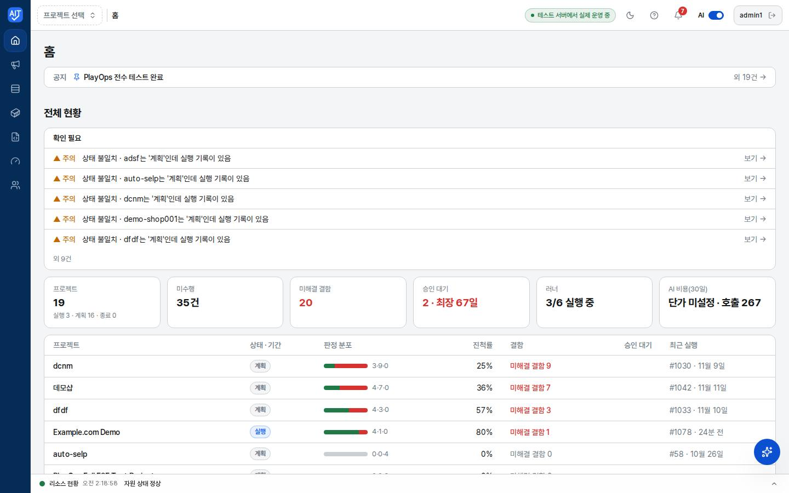
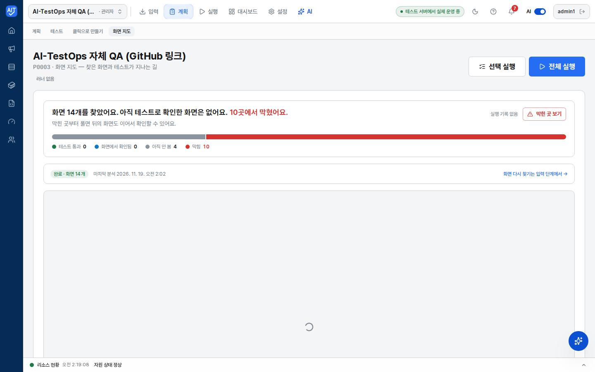
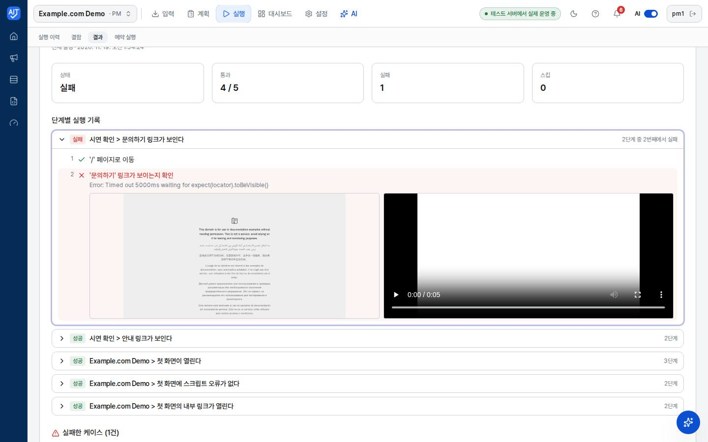
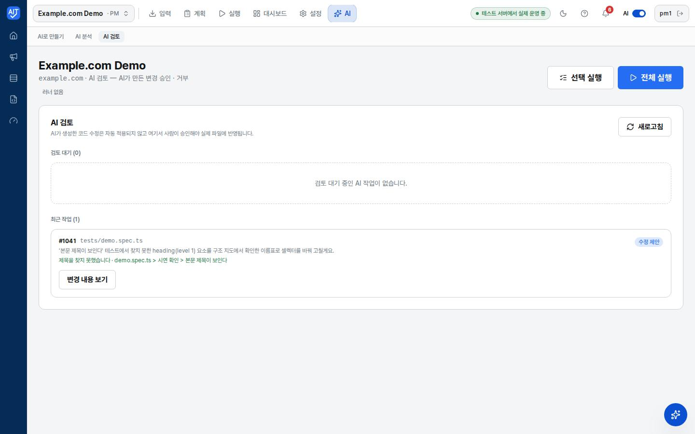
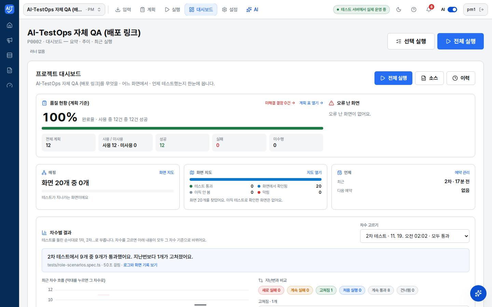

AI-TestOps 사용자 설명서
웹 사이트의 화면을 찾고, 계획을 세워 테스트를 만들어 잇고, 돌리고, 실패를 AI와 함께 고치는 QA 플랫폼입니다.
1. 처음 시작하기
로그인하면 역할에 맞는 홈이 열립니다. 화면은 왼쪽 메뉴, 위쪽 프로젝트 메뉴, 그 아래 세부 탭으로 나뉩니다.

역할 세 가지
| 역할 | 할 수 있는 일 | 보지 못하는 것 |
|---|---|---|
| 관리자 | 모든 프로젝트 · 사용자 관리 · Runner · AI 설정 · 공지 관리 | — |
| PM | 맡은 프로젝트의 계획 세우기 · 테스트 연결 · 실행 · 결함 다시 실행 · AI 수정 승인 · 팀원 지정 | 사용자 관리, AI 설정 |
| 팀원 | 배정된 케이스 확인 · 전체 실행 · 결함 다시 실행 · 결과 보기 | 케이스 고르기(선택 실행), 계획 수정, 승인 |
화면 구성
| 위치 | 내용 |
|---|---|
| 왼쪽 메뉴 | 홈 · 공지 · 프로젝트 · 템플릿 · Runner · (관리자) 사용자 관리 |
| 위쪽 프로젝트 메뉴 | 입력 · 계획 · 실행 · 대시보드 · 설정 · AI |
| 세부 탭 | 계획: 계획 · 테스트 · 클릭으로 만들기 · 화면 지도 / 실행: 실행 이력 · 결함 · 결과 · 예약 실행 / AI: AI로 만들기 · AI 분석 · AI 검토 |
| 오른쪽 위 | 운영 상태 · 다크 모드 · 도움말(이 설명서) · 알림 · AI 켜기/끄기 · 내 계정 |
2. 역할별 홈
같은 "홈"이지만 역할마다 먼저 볼 것이 다릅니다.
확인 필요 목록, 프로젝트 · 미수행 · 미해결 결함 · 승인 대기 · 러너 · AI 비용, 프로젝트 표, 사용자 · 러너
확인할 것(승인 대기 · 기한 지남 · 담당자 없음), 프로젝트마다 완료율 막대와 "계획 N · 작성 x% · 완료 y%" 한 줄, 담당자별 현황, 위험한 프로젝트부터
나에게 배정된 케이스, 오늘 마감 · 기한 지남 · 실패, 한 번에 실행 · 다시 실행 · 결과 보기



프로젝트 대시보드
프로젝트 위쪽 메뉴의 대시보드는 위에서부터 세 가지 질문에만 답합니다. 맨 위 품질 현황 오른쪽에는 전체 실행 버튼 하나가 있고, 돌고 있을 때는 중지로 바뀝니다.
계획 → 작성(%) → 실행 → 통과를 막대로 보여 주고, 큰 글씨로 완료율을 씁니다. 아래에 마감 지난 항목과 미사용 건수가 있습니다. 숫자를 누르면 계획 표로 갑니다. 모두 사용 중인 계획만 셉니다.
미해결 결함 N건 →(결함 목록으로), 오류 난 화면(실패 건수), 계획 없는 화면(5개까지, 나머지는 "외 N개", 화면 지도에서 보기 →), 담당자별 미완료(건수 많은 5명).
정기 실행 통과율 · 최근 7일을 날짜별 막대로 보여 주고 다음 정기 실행: 내일 03:00처럼 다음 시각을 알려 줍니다. 기록이 없으면 "정기 실행을 켜면 여기에 쌓여요."가 보이고, PM에게는 정기 실행 설정 → 링크가 있습니다.

- 마감 지난 항목: 사용 중이고, 아직 통과하지 못했고, 마감일이 오늘 이전인 계획 항목.
- 계획 없는 화면: 화면 지도에 있는 화면 중 계획 항목이 하나도 없는 화면. 테스트할 계획이 빠진 곳을 찾는 데 씁니다.
- 정기 실행: 실행 › 예약 실행으로 자동으로 돈 실행. 직접 누른 실행은 추세에 들어가지 않습니다.
3. 기본 사용법
프로젝트 하나를 등록해서 계획을 세우고, 테스트를 잇고, 실패를 고치기까지의 순서입니다.
① 프로젝트 등록 관리자
- 프로젝트 목록에서 새 프로젝트를 누릅니다.
- 사이트 주소를 넣습니다. 테스트가 이 주소를 엽니다.
- 앱 소스가 GitHub에 있으면 소스 저장소 주소도 넣습니다. 코드에서 화면 구조를 읽습니다.
- PM을 고르면 그 사람이 프로젝트를 맡습니다. 팀원은 설정 → 팀원 탭에서 더합니다.
② 화면 찾기
입력에서 코드에서 화면 찾기(소스 저장소) 또는 주소로 화면 찾기(사이트를 직접 탐색)를 누릅니다. 결과는 계획 › 화면 지도에서 봅니다. 화면마다 테스트로 확인했는지, 아직 안 봤는지, 막혔는지가 색으로 보입니다.

③ 계획 세우기 PM
AI-TestOps는 계획이 중심입니다. 계획 › 계획 표에 "무엇을 테스트할지"를 먼저 적고, 테스트는 나중에 만들어 잇습니다. 테스트가 아직 없어도 계획 항목(표의 한 줄)을 만들 수 있고, 실행 · 결함 · 대시보드는 모두 이 계획 항목에 이어집니다.
계획 항목 넣기 — 계획 추가
표 위의 계획 추가를 누르면 계획 추가 창이 열립니다. 제목만 있어도 만들 수 있습니다.
| 칸 | 내용 |
|---|---|
| 제목 | 필수. 1~200자이고 @와 줄바꿈은 쓸 수 없습니다. 나중에 만들 테스트의 제목이 됩니다. |
| 화면 | 화면 지도에서 찾은 화면 중에서 고릅니다. 고르지 않으면 "미지정". |
| 담당자 | 프로젝트 팀원 중에서 고릅니다. |
| 마감일 | 날짜. |
| 우선순위 | 높음 · 보통 · 낮음 (고르지 않으면 없음). |
| 확인할 내용 | 이 항목에서 무엇이 되어야 하는지 자유롭게 적습니다. AI로 테스트를 만들 때 AI가 이 내용을 읽습니다. |

엑셀에서 붙여넣기
계획이 이미 엑셀에 있으면 엑셀에서 붙여넣기로 한꺼번에 넣습니다. 열을 아래 순서로 맞춰 복사한 뒤 창에 붙여넣으세요.
| 열 | 내용 |
|---|---|
| 1 | 제목 (필수) |
| 2 | 화면 — 화면 지도의 화면 이름 또는 주소 |
| 3 | 담당자 — 팀원의 이름 또는 아이디 |
| 4 | 마감일 — 2026-12-01 또는 2026.12.01 |
| 5 | 우선순위 — 높음 · 보통 · 낮음 (HIGH · MEDIUM · LOW도 됩니다) |
| 6 | 확인할 내용 |
- 엑셀에서 복사한 표(탭으로 나뉨)와 쉼표로 나뉜 CSV를 모두 읽습니다. 첫 줄이 "제목" · "계획 항목" · "케이스명"이면 머리글로 보고 건너뜁니다.
- 붙여넣으면 아래에 미리보기 표가 나옵니다. 알아보지 못한 값은 입력 확인 칸에 "화면 미지정 (…)" · "담당자 미지정 (…)"처럼 알려 주고, 그 칸만 비운 채 추가됩니다.
- 제목이 비었거나 200자를 넘거나
@가 든 행이 있으면 추가할 수 없습니다. 고쳐서 다시 붙여넣으세요. - 한 번에 200건까지 넣을 수 있고, 버튼은 N건 추가입니다.

작성 상태
계획 항목의 제목 옆에 작성 상태가 붙습니다.
| 상태 | 뜻 |
|---|---|
| 미작성 | 아직 테스트가 연결되지 않았습니다. 실행할 것이 없습니다. |
| AI 작성 중 | AI가 테스트를 만드는 중입니다. 몇 초마다 표가 저절로 새로 고쳐집니다. |
| 검토 대기 | AI가 만든 안이 승인을 기다립니다. 행에 AI 검토에서 승인하세요 링크가 생깁니다. |
| 작성됨 | 테스트가 연결됐습니다. 실행 결과와 결함이 이 행에 쌓입니다. |
클릭으로 만들기 · 기존 테스트 연결은 미작성에서 바로 작성됨이 됩니다.

계획 칸 고치기
- 칸을 두 번 눌러 고치고, 순서 칸을 끌어 옮깁니다. 고치면 바로 저장되고, 저장하지 못하면 원래 값으로 돌아갑니다.
- 사용 체크: 체크한 항목만 실행됩니다. 표 위 버튼은 체크한 N건 실행입니다. 행을 골라 선택한 N건 사용 · 선택한 N건 미사용으로 한꺼번에 바꿀 수도 있습니다.
- 담당자(팀원 중에서 고름) · 마감일 · 우선순위 · 화면 · 확인할 내용은 언제든 고칩니다.
- 계획 항목(제목)은 미작성 행에서만 고칠 수 있습니다. 작성됨 행의 제목은 테스트 제목과 같아야 하므로, 먼저 연결을 끊고 고칩니다.
- 행의 삭제는 계획 항목만 지웁니다. 연결돼 있던 테스트 파일은 그대로 남습니다.
- 팀원에게는 이 표가 보기 · 실행 전용입니다("계획은 PM이 정해요").
- 표 오른쪽에는 최근 결과 · 직전 결과 · 결함 · 최근 수정 · 정기 실행 (최근 7일) 칸이 있고, 표 위의 CSV 내보내기로 엑셀에서 열 수 있습니다(작성 상태 · 확인할 내용 열 포함).
표 위에는 계획 N · 작성 n (x%) · 완료 m (y%) 한 줄이 있습니다. 여기서 N은 사용 안 함을 포함한 전체 건수이고, 퍼센트는 사용 중인 계획 기준입니다.
④ 테스트 만들기 · 연결 PM
미작성 행의 행동 칸에서 테스트를 잇는 방법을 고릅니다. 연결되면 행이 작성됨이 되고, 그 행에 적어 둔 사용 · 담당자 · 마감일 · 우선순위가 테스트 케이스로 넘어갑니다.
| 방법 | 누르는 곳 | 이어지는 과정 |
|---|---|---|
| AI로 만들기 | 행의 AI로 만들기 (여러 행을 골라 AI로 N건 만들기, 한 번에 10건까지) | 상태가 AI 작성 중 → 검토 대기로 바뀝니다. AI › AI 검토에서 승인 및 적용하면 계획 제목과 같은 제목의 테스트가 만들어지고 자동으로 연결됩니다. AI는 제목 · 확인할 내용 · 화면을 보고 만듭니다. AI가 꺼져 있으면 "AI가 꺼져 있어요" 안내만 나옵니다. |
| 클릭으로 만들기 | 행의 클릭으로 만들기 | 계획 › 클릭으로 만들기 화면이 열리고, 저장 칸의 테스트 이름(계획 제목)과 저장 경로가 미리 채워져 있습니다. 사이트를 눌러 녹화한 뒤 저장하면 자동으로 연결됩니다. 이름은 바꾸지 마세요. 계획 제목과 달라지면 자동으로 잇지 못합니다. |
| 기존 테스트 연결 | 행의 기존 테스트 연결 | 연결할 테스트에서 고르고 연결을 누릅니다. 목록에는 아직 어느 계획에도 이어지지 않은 테스트만 나옵니다. |
| AI 연결 추천 | 표 위의 AI 연결 추천 | AI가 미작성 계획과 계획 없이 만들어진 기존 테스트 중 짝을 골라 보여 줍니다. 맞는 것만 체크해 선택한 N건 연결을 누릅니다. 추천을 저절로 반영하지는 않습니다. |
계획 없이 테스트를 바로 만드는 길
계획 항목 없이 테스트부터 만드는 길도 그대로 있습니다. 이렇게 만든 테스트는 계획 행 없이 작성됨으로 표에 나타나고, 같은 제목의 계획 항목이 있으면 자동으로 연결됩니다.
| 방법 | 위치 | 언제 쓰나 |
|---|---|---|
| 클릭으로 만들기 | 계획 › 클릭으로 만들기 | 사이트를 직접 눌러 가며 녹화. 코드를 몰라도 됩니다. |
| AI로 만들기 | AI › AI로 만들기 | "로그인하고 장바구니에 담는다" 같은 문장으로 테스트 생성. |
| 화면 지도에서 다시 녹화 | 계획 › 화면 지도의 막힌 곳 목록 | 다시 녹화하기를 누르면 그 화면에서 클릭으로 만들기가 시작됩니다. |
| 첫 테스트 자동 생성 | 프로젝트 등록 직후 | 사이트를 탐색해 기본 점검 테스트를 만들고 돌려 봅니다. |
| 코드 편집기 | 입력 › 코드 편집기 | Playwright 코드를 직접 고칩니다. AI 수정 도움도 여기 있습니다. |
⑤ 실행하기
- 전체 실행(프로젝트 위쪽 · 대시보드 상단 버튼): 사용으로 체크된 작성됨 케이스를 모두 돌립니다. 테스트가 아직 없는 미작성 행은 돌 것이 없어 건너뜁니다.
- 선택 실행(PM): 케이스를 골라 묶어서 돌립니다.
- 예약 실행(실행 › 예약 실행): 매일 · 요일별로 자동 실행합니다. 이렇게 돈 실행이 대시보드 추세와 계획 표의 정기 실행 (최근 7일) 칸에 쌓입니다.
- 실행 이력(실행 › 실행 이력): 맨 위의 차수별 결과에서 차수 고르기로 1차, 2차… 테스트를 고르면 한 문장 요약 · 최근 차수 흐름 · 지난번과 비교가 그 차수로 바뀝니다. 접어 둘 수 있고, 로그와 화면 기록 보기로 그 실행의 결과 화면에 갑니다.
- 도는 동안 프로젝트 이름 아래에 테스트 실행 중 · 42초 경과 · 약 1분 남음이 보입니다. 남은 시간은 최근 같은 범위 실행 시간으로 잡고, 이력이 없으면 경과 시간만 보입니다. 멈추려면 실행 중지를 누릅니다.
⑥ 결과 · 결함 보기
실행 › 결함은 실패한 케이스를 모아 보여 줍니다(미해결 · 해결). 케이스를 누르면 실행 › 결과에서 단계별 실행 기록, 실패 시점 화면, 영상을 봅니다. 고친 뒤에는 결함 표에서 골라 다시 실행합니다. 통과하면 해결로 바뀝니다.


⑦ AI로 고치기 PM
- 실행이 실패하면 결과 화면에 수정 제안 카드가 생깁니다("이렇게 고칠까요?").
- 진행을 누르면 AI가 격리된 사본에서 고치고 다시 돌려 봅니다. 통과한 수정안만 올라옵니다.
- AI › AI 검토에서 바뀐 내용과 위험 표시를 보고 승인 및 적용 또는 거부합니다.
- 승인하면 파일에 반영되고 전체를 한 번 더 돌려 확인합니다(사후 검증). 다른 테스트가 깨지면 자동으로 되돌립니다.

⑧ AI 루프 (학습 루프)
실패한 실행 결과 화면 위쪽의 AI 루프 패널에서 실패의 원인(제품 결함 · 스크립트 오류 · 환경 · 불안정 · 미분류)과 과거 수정 N건 참고를 봅니다. PM은 AI 루프로 고치기로 아래 순서를 한 번에 돌립니다.
- 최대 3바퀴, 두 번 연속 진전이 없거나 예산을 다 쓰면 멈추고 사람에게 넘깁니다.
- 환경(네트워크 등) · 제품 결함은 테스트 코드로 고칠 일이 아니라 사람에게 넘깁니다.
- 사람이 승인한 수정은 기억돼서, 같은 실패가 다시 나면 "과거 수정 1건 참고"로 예시에 쓰입니다. 테스트할수록 똑똑해집니다.
⑨ 관리자 메뉴 관리자
| 메뉴 | 내용 |
|---|---|
| 사용자 관리 | 계정 만들기 · 역할 바꾸기 · 비밀번호 초기화 · 모든 기기에서 로그아웃 |
| Runner | 테스트를 돌리는 Docker 컨테이너 상태 · 동시 실행 수 |
| AI 설정 | AI 키 · 모델 · 단가 (관리자만) |
| 공지 | 공지 쓰기 · 고정 · 게시 기간 |

4. 사용자 흐름도
전체 흐름과 역할별로 하는 일입니다. 계획이 중심이라, 실행 · 결함 · 대시보드는 모두 계획 항목에 이어집니다.
전체 흐름
테두리: AI가 하는 일 사람이 정하는 일
역할별 흐름
5. 용어 정리
| 용어 | 뜻 |
|---|---|
| 프로젝트 | 테스트할 사이트 하나. 사이트 주소와 (있으면) 소스 저장소를 가집니다. |
| 테스트 케이스 (케이스) | 확인할 일 하나. spec 파일 안의 test('...') 하나입니다. |
| spec 파일 | 케이스들이 들어 있는 Playwright 코드 파일 (tests/*.spec.ts). |
| 계획 표 | 계획 항목마다 작성 상태 · 사용 여부 · 담당자 · 마감일 · 우선순위 · 마지막 판정을 적고 보는 표 (계획 › 계획). |
| 계획 항목 | 테스트할 일 한 줄. 제목 · 화면 · 확인할 내용 · 담당자 · 마감일 · 우선순위를 가지며, 테스트가 아직 없어도 만들 수 있습니다. 실행 · 결함 · 대시보드는 모두 계획 항목에 이어집니다. |
| 확인할 내용 | 계획 항목에서 무엇이 되어야 하는지 적은 글. AI가 테스트를 만들 때 읽습니다. |
| 미작성 | 테스트가 아직 연결되지 않은 계획 항목. (AI 작성 중 · 검토 대기도 아직 미작성에 속하는 중간 단계입니다.) |
| 작성됨 | 테스트가 연결된 계획 항목. 계획 없이 만든 테스트도 표에는 작성됨으로 나옵니다. |
| 작성률 | 사용 중인 계획 중 작성됨인 비율. |
| 자동 연결 | 미작성 계획 항목과 제목이 똑같은 테스트가 하나뿐일 때 저절로 잇는 것. 직접 연결을 끊은 항목은 자동으로 다시 잇지 않습니다. |
| 정기 실행 | 예약 실행으로 자동으로 돈 실행. 대시보드 추세와 계획 표의 정기 실행 (최근 7일) 칸이 이것을 보여 줍니다. |
| 실행 (실행 #n) | 러너가 브라우저로 케이스들을 한 번 돌린 것. |
| 판정 | 케이스의 결과: 미수행 · 통과 · 실패. 실행을 중지해도 이전 판정은 그대로입니다. |
| 완료율 | 사용 중인 계획 중 마지막 결과가 통과인 비율. 아직 작성하지 않은 항목도 분모에 들어갑니다. 이 설명서는 "완료율"로 통일했습니다. 프로젝트 카드 · 관리자 홈 · 팀원 홈에는 아직 "진척률"이라고 적힌 곳이 있고, 같은 값입니다. |
| 결함 | 실패에서 생기는 추적 단위. 다시 실행해서 통과하면 해결. |
| 스위트 | 실행할 때 고르는 케이스 묶음. |
| 러너 (Runner) | 테스트를 돌리는 Docker 컨테이너. 일회용(실행마다 새로) 또는 상주. |
| 화면 지도 | 코드나 사이트 탐색으로 찾은 화면과 이동 경로. 테스트가 확인한 화면이 색으로 표시됩니다. |
| 수정 제안 | 실패에서 자동으로 만든 "이렇게 고칠까요?" 카드. 진행을 눌러야 AI가 고칩니다. |
| AI 검토 · 승인 대기 | AI가 만든 변경을 사람이 승인 · 거부하는 곳과 그 상태. |
| 격리 재검증 | AI가 프로젝트 파일이 아닌 사본에서 고치고 다시 돌려 통과를 확인하는 것. |
| 사후 검증 | 승인으로 반영된 뒤 전체를 다시 돌려 다른 테스트가 깨지지 않았는지 보는 것. 깨지면 자동으로 되돌립니다. |
| 위험 표시 | 검증을 줄이거나 실제 사이트를 건너뛰는 등 조심해서 볼 변경에 붙는 표시. |
| 원인 | 실패의 이유: 제품 결함(사이트가 기대와 다름) · 스크립트 오류(테스트 코드 문제) · 환경(네트워크 · 브라우저) · 불안정(통과 · 실패를 오감) · 미분류. 판정이 아닙니다. |
| AI 루프 (학습 루프) | 분류 → 과거 수정 참고 → 격리 수정 → 승인 → 다시 실행을 자동으로 반복하는 기능. |
| 과거 수정 N건 참고 | 같은 · 비슷한 실패에서 사람이 승인했던 수정 수. 루프가 예시로 씁니다. |
6. 자주 묻는 질문
아니요. AI가 만든 변경은 모두 AI › AI 검토에서 사람이 승인해야 반영됩니다.
도는 중이면 돌아가는 원과 "경과 · 약 n분 남음"이, 사람 차례(승인 대기)면 모래시계가 보입니다.
아니요. 중지된 실행은 판정을 바꾸지 않습니다.
케이스 고르기는 PM의 일입니다. 팀원은 전체 실행 · 결함 다시 실행 · 계획 표 실행을 씁니다.
이미 AI 작성 중이거나 검토 대기인 행, 처리 중일 때는 잠깁니다. AI가 꺼져 있으면 안내만 나오고, 여러 행을 한 번에 만들 때는 10건까지입니다.
승인한 뒤 계획 표를 다시 열면 같은 제목의 테스트와 자동으로 연결됩니다. 제목이 달라졌거나 같은 제목의 테스트가 여럿이면 자동으로 잇지 못하니 기존 테스트 연결로 이어 주세요.
완료율은 아직 작성하지 않은 항목까지 분모에 넣어 셉니다. 테스트를 연결해 통과시키면 올라갑니다.
사이트에 닿지 못했거나 브라우저가 뜨지 않은 경우입니다. 테스트 코드 문제가 아니므로 네트워크 · 러너 상태를 먼저 확인하세요.
7. 자체 QA 예시
AI-TestOps로 AI-TestOps 자신을 테스트한 예입니다 (배포 링크 · GitHub 링크 프로젝트, 관리자 · PM · 팀원 시나리오 9개).
| 역할 | 시나리오 |
|---|---|
| 관리자 | 홈에서 전체 현황 보기 · 사용자 관리에서 계정 찾기 · Runner 관리 열기 |
| PM | 홈에서 맡은 프로젝트 보기 · 계획 표와 선택 실행 버튼 · 사용자 관리는 열리지 않음 |
| 팀원 | 홈에서 내 할 일 보기 · 계획 표는 보이고 선택 실행은 없음 · 사용자 관리는 열리지 않음 |
